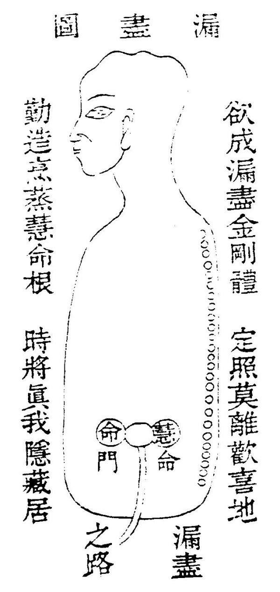

慧 命 经
漏 尽 图 第 一

盖道之精微，莫如性命。性命之修炼，莫如归一。古圣高贤将性命归一之旨，巧喻外物，不肯明示直论。所以世之无双修者矣。余之续图者，非敢妄泄也。是遵楞严之漏尽，表华严之妙旨，会诸经之散言，以归正图。方知慧命是不外乎窍矣。且此图之所立者，是愿同志之士，明此双修之天机，不堕傍门，方知真种由此而怀，；漏尽由此而成，舍利由此而练，大道由此而成，且此窍也，乃是虚无之窟，无形无影，气发则成窃，机息则渺茫，乃藏真之所。修慧命之坛，名之曰海底龙宫，曰雪山界地，曰西方，曰元关，曰极乐园，曰无极之乡，名虽众多，无非此一窍也。修士不明此窍，千身万劫，慧命则无所觅也。是窍也，大矣哉！父母未生此身，受孕之时，先生此窍，而性命实寓于其中。二物相融合而为一，融融郁郁，似炉中火种，一团太和天理。故曰先天有无穷之消息，故曰父母未生前，气足胎圆，形动包裂，犹如高山失足，〔“口”字中一“力”字〕地一声，而性命到此则分为二矣，自此以往，性不能见命，命不能见性。少而壮，壮而老，老而呜乎。故如来发大慈悲，泄漏修炼之法，救人再入胞胎，重造我之性命，将我之神气入于此窍之内，合二为一，以成胎孕，其理一也。夫窍内有君火，门首有相火，周身为民火。君火发而相火承之，相火动而民火从之，三火顺去，则成人，三火拟来则成道，故漏尽之窍，凡圣由此而起，不修此道，而另修别务，是无所益业。所以千门万户不知此窍内有慧命主宰，向外寻求，费尽心机，无所成矣。